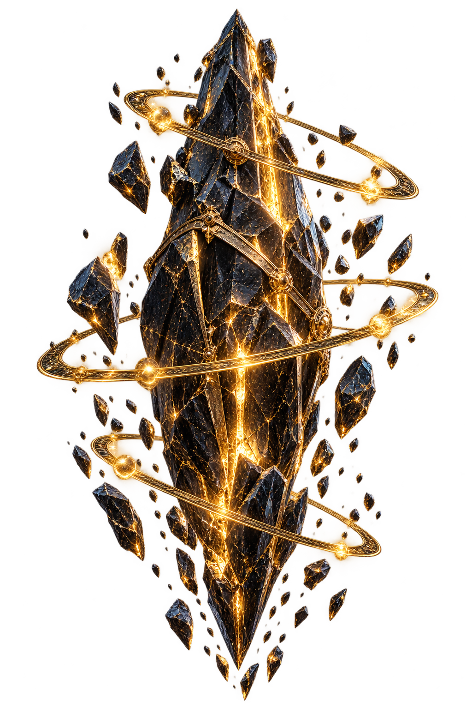

SELECTED CIVILIZATION
THE ARCHIVE IS SEALED
Connect an authenticated wallet to reveal chapters unlocked by your discoveries.
THE FIRST SIGNAL HAS ARRIVED
Discover mysterious relics from lost civilizations, powered by AI. Every artifact holds a story, and every discovery changes the world.

DATA UNAVAILABLE
EXPEDITION TERMINAL
Venture into mysterious regions, discover ancient relics, and uncover the secrets of forgotten worlds.
ARTIFACT INTELLIGENCE
Advanced AI analysis reveals the hidden history, materials and purpose of each artifact.
THE DIGITAL MUSEUM
A living museum of verified discoveries and preserved AI reports.
LOST WORLDS INDEX
Discover the cultures and technologies of civilizations reconstructed from verified relics.
SELECTED CIVILIZATION
Connect an authenticated wallet to reveal chapters unlocked by your discoveries.
THE MOST ACTIVE EXPLORERS
Rankings are calculated from verified, unreversed database records only.
EXPLORER IDENTITY
Connect your wallet to load private profile data.
Only wallet-scoped database records will appear here.
PROJECT SIGNAL
A fictional science-fantasy universe where AI-assisted storytelling, verifiable ownership, and collaborative exploration meet.
A cinematic exploration platform centered on persistent fictional artifacts.
AVAILABLE · FRONTENDAuthenticated expeditions use server-owned eligibility and secure rarity selection.
BACKEND PREPAREDStructured lore and analysis remain clearly labeled as fictional universe content.
REQUIRES PROVIDERVerified discoveries unlock connected historical chapters.
DATABASE-DRIVENNFT preparation exists, but minting stays disabled until audited contracts deploy.
FUTURE BLOCKCHAINRailway infrastructure, real providers, testnet contracts, and public launch.
IN DEVELOPMENT